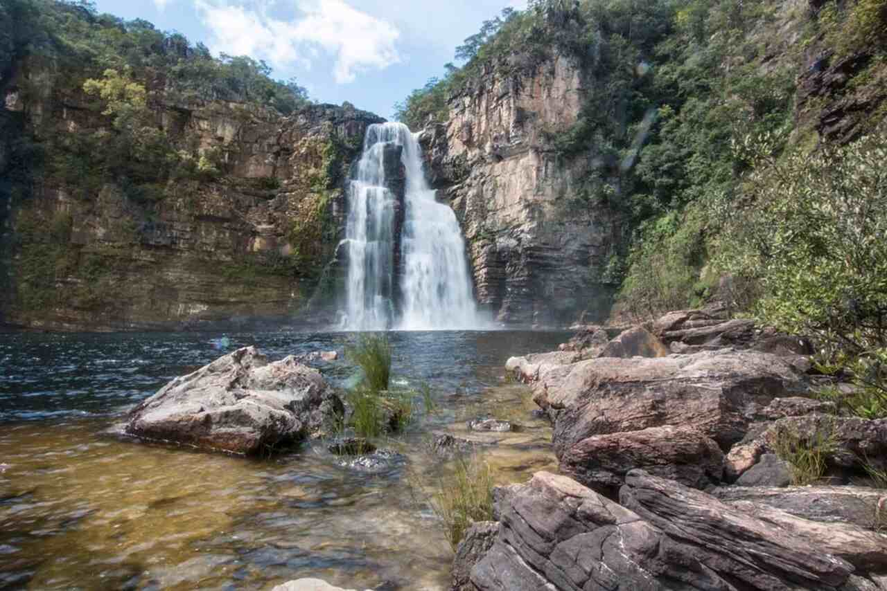
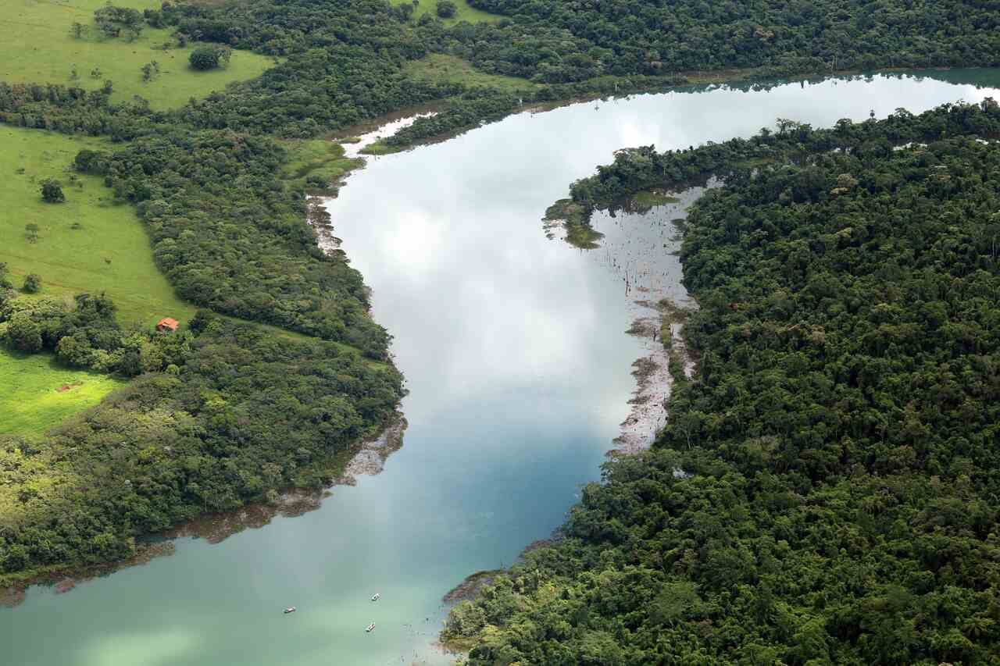
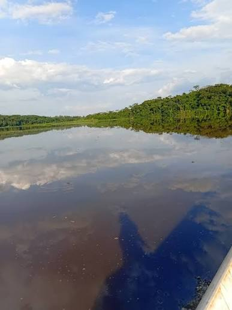
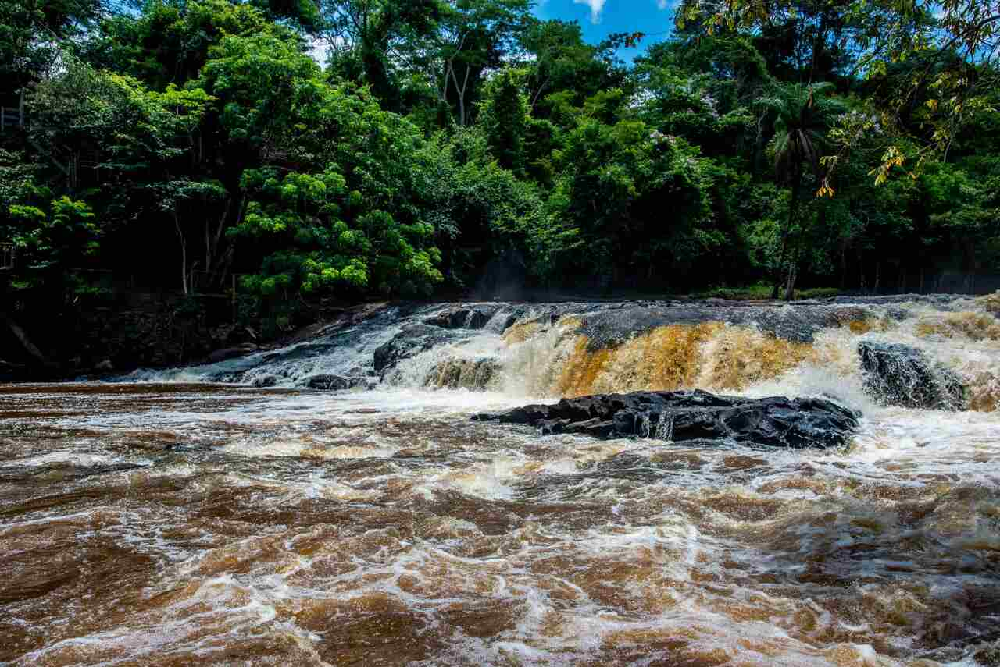
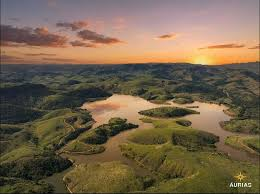

Salto do Rio Negro
Um passeio emocionante por corredeiras e trechos de águas rápidas. Ideal para quem quer sentir a adrenalina do rafting em contato com a natureza.
Nível: Intermediário

Escolha sua próxima aventura e prepare-se para conhecer rios incríveis.

Um passeio emocionante por corredeiras e trechos de águas rápidas. Ideal para quem quer sentir a adrenalina do rafting em contato com a natureza.
Nível: Intermediário

Uma experiência equilibrada entre aventura e contemplação, combinando águas movimentadas com momentos tranquilos.
Nível: Iniciante

Um percurso com corredeiras desafiadoras que exige atenção, trabalho em equipe e orientação dos guias.
Nível: Avançado

Uma aventura intensa para grupos que desejam enfrentar um dos trechos mais emocionantes do nosso catálogo.
Nível: Avançado

Um percurso diversificado que combina diferentes tipos de corredeiras e oferece uma experiência completa de rafting.
Nível: Intermediário
| Passeio | Nível | Duração | Indicação |
|---|---|---|---|
| Salto do Rio Negro | Intermediário | 3 horas | Aventureiros |
| Rio Paranapanema | Iniciante | 2 horas | Famílias e iniciantes |
| Rio Jacaré | Avançado | 4 horas | Aventureiros experientes |
| Garganta do Diabo | Avançado | 4 horas | Grupos experientes |
| Três Rios | Intermediário | 3 horas | Grupos e amigos |
Entre em contato conosco para tirar dúvidas e planejar sua aventura.
Fale Conosco